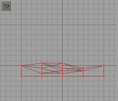
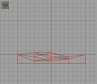

Cell Size - This sets the size of each block. Again, this is not implemented.
This is the fourth in a series of tutorials from Wolf. If you are a beginner to UnrealEd it is suggested you go back and read a basic tutorial and then the first three in this series. This little tutorial will introduce you to the Floor Lofter.
The Floor Lofter is an experimental program built into UnrealEd that will allow you to quickly and easily allow you to make a natural looking outdoor surface for your Unreal maps. It am sure it can be used for other structures as well, but natural looking terrain is it's strong suit. The Floor Lofter can be found in UnrealEd on the menu at the top under Window. Open the Floor Lofter. You should have this screen:


Here is the option and what it does:
 Render Button - builds the (red) brush as per the rest of the settings.
Render Button - builds the (red) brush as per the rest of the settings.
 Level - there are five levels of lofting, they go across the brush from left to right (in the overhead view).
Level - there are five levels of lofting, they go across the brush from left to right (in the overhead view).
 Terra Grid - sets how many "blocks" there are across. The default is 4 x 4 and even if you change it, it has no effect. This is not implemented.
Terra Grid - sets how many "blocks" there are across. The default is 4 x 4 and even if you change it, it has no effect. This is not implemented.
Cell Size - This sets the size of each block. Again, this is not implemented.
 Render Scale - default is 1 which make the over all length and width of the brush 256 x 256. As you scale it up it increases the size of the brush accordingly.
Render Scale - default is 1 which make the over all length and width of the brush 256 x 256. As you scale it up it increases the size of the brush accordingly.
Lets just show you what the floor lofter does. Start by loading the GenEarth.utx textures. Now, select a rocky one you like. Set your cube to 512 x 1024 x 1024. Subtract this brush, building a "room." Now choose a grassy looking texture for the ground. Think about how "hilly" you want your ground to be. Don't get too carried away yet, this is just a tutorial! Open the Floor Lofter. First of all, see that red line near the bottom of the window, that is going to be the bottom of your brush. The line at the top (with the vertices) will be the top of the brush. You can click and move that run line up and down to set the thickness of the floor brush. You can also click and move the vertices (and thus the lines of the top of the brush) and the top. By doing this you make hills and valleys, or high and low spots. The farther you raise a vertex on the top line, the higher the hill, and the lower you drag it toward the red line, the lower it will be. Do not drag a vertex from the top line below the bottom red line! You'll only crash and burn.
Now after you set the first screen the way you want it, then click on the "next" button  and go to the next level of lofting. There are five levels to set. Once you have set your terrain in all five levels, click the render button and then close the floor lofter. You should have something like this:
and go to the next level of lofting. There are five levels to set. Once you have set your terrain in all five levels, click the render button and then close the floor lofter. You should have something like this:
 
When you get a floor brush that looks good to you then line it up with the bottom of your "room" and add it to your world. Now you might note that the scale of the ground texture is a little stretched. That's because UnrealEd "stretches" a texture to fit the surface of the brush. To fix this high light a face of the ground and press SHIFT-T (this will select all the matching textures in your level). Right click and go to Align Selected and align as floor/ceiling. This should reset the texture. If all went well, you should have a ground something like this:

As you fly through your level in the 3D window you can see how big (or how little) your hills are. Keep this in mind when making terrain. It's very simple: the higher you want the hills, the more you move the vertices.
You turn to play with the floor lofter! Remember, it's experimental so be careful and always experiment on a new level and not one you intend to keep. If, while you're playing around, you make an absolutely wonderful floor brush you just have to keep, export it like we did the brushes in the previous tutorials. Try new things, like only moving the vertices in one (of the five) levels to see what that does. Play with it and be creative and have fun!